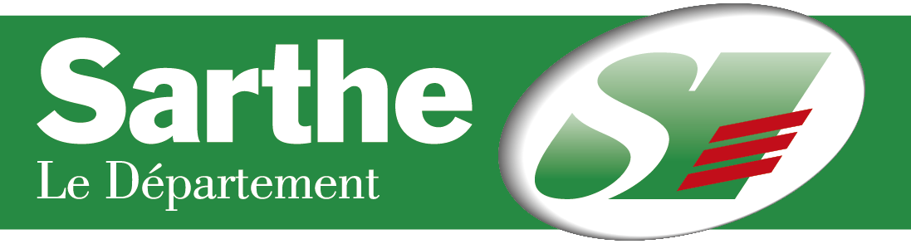
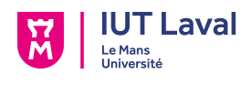

Me contacter
Nous pouvons échanger ensemble sur les réseaux sociaux, par mail ou par téléphone avant de nous rencontrer dans la vie réelle !
- Par mail : contact.chloecorfmat@gmail.com
- Par téléphone : 07 50 34 60 70
Mes expériences professionnelles depuis plus de 5 ans
Durant mes 4 années d’alternance, puis après ma diplomation, j’ai eu l’occasion de mettre à profit mes compétences.
-

Ingénieure web
Klee Interactive - Nantes, France (septembre 2019 à aujourd’hui)
- Développement en Drupal 8 de sites web pour des services publics et privés ;
- Utilisation et amélioration des environnements de développements (Docker, Jenkins, Ansible...) ;
- Accompagnement technique et fonctionnel des débutants et relectures de code ;
- Conception technique de fonctionnalités métiers ;
- Aide à l'intégration HTML/CSS et mise en place des principes d'accessibilité web ;
- Participation aux différentes réunions : démonstration, conception technique, chiffrage...
-

Ingénieure logiciel (en alternance)
Capgemini - Nantes, France (septembre 2016 à septembre 2019)
Pendant les 3 années de ma formation d'ingénieure, j'ai travaillé au sein du Centre de Services e-Vtech (anciennement Voyages-SNCF.com Technologies). J'ai eu l'opportunité de travailler sur les nouveaux sites SNCF.com et OUI.sncf, ainsi que sur d'autres sites de la galaxie SNCF tels que TGV-lyria.com ou IZY.com.
- Développement en Drupal 8 ;
- Intégration de maquette en HTML/CSS avec prise en compte de l'accessibilité web ;
- Conception technique ;
- Préparation et animation des mises en production du site SNCF.com ;
- Accompagnement des nouveaux sur les projets ;
- Participation aux différentes cérémonies agiles des projets (grooming, chiffrage, démo, sprint planning, daily...) ;
- Macro-estimation de chiffrage de nouveaux projets ou lots de fonctionnalités ;
- Tests automatisés avec Selenium et rédaction de documentation.
-

Technicienne web (en alternance)
Conseil Départemental de la Sarthe - Le Mans, France (septembre 2015 à août 2016)
Pendant ma deuxième année de DUT MMI, j'ai pu participer à la refonte de l'usine à sites Sarthe.fr et en particulier des sites Sarthe.fr et l'intranet du Département à destination des agents.
- Listing des fonctionnalités et contenus essentiels de l'intranet ;
- Spécifications fonctionnelles et rédaction des users stories ;
- Réalisation de maquettes graphiques ;
- Formation des utilisateurs finaux ;
- Prise en compte de l'accessibilité web ;
- Démonstrations fonctionnelles ;
- Développement en Drupal 7 ;
- Intégration HTML/CSS.
Ma vie associative
-
Association des Anciens Élèves de l'Enssat (depuis 2020)
Membre du Conseil d'Administration de l'Association
- Création et gestion du compte Instagram de l'association ;
- Rédaction d'actualités sur le site de l'association.
Langues parlées
-
🇫🇷 Français (langue maternelle)
-
🇬🇧 Anglais (niveau B2)
Mes centres d'intérêt
-
🧵 Couture
d'accessoires et de vêtements
-
🎨 Loisirs créatifs
Art du fil (broderie, tricot...), scrapbooking, aquarelle...
-
🌱 Écologie, santé, développement personnel
Zéro déchet, alimentations, médecines alternatives...
-
🌍 Geocaching
pour découvrir des endroits attractifs
-
💻 Technologies
Domotique, web, systèmes de recommandation...
Mes formations
-
Ingénieure en informatique, multimédia et réseaux (par alternance)
Enssat - Lannion, France (septembre 2016 à septembre 2019)
-

DUT Métiers du Multimédia et de l'Internet (par alternance)
IUT de Laval - Laval, France (septembre 2014 à septembre 2016)
Cette formation m'a permis d'acquérir des compétences dans des domaines très variés (développement web, infographie, communication, audiovisuel...).
Pour en savoir plus, rendez-vous sur mon site personnel !
chloecorfmat.fr